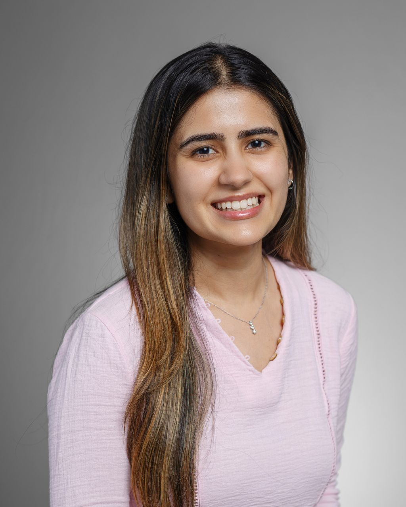

About me

I am a research scientist at Meta in Reality Labs Research. I specialize in hardware-software co-design and on-device AI acceleration. My current work is focused on low-latency machine perception on ultra low-power wearables (AR/smart glasses). I have developed techniques for near- and on-sensor processing, extreme model compression, and integration of custom accelerators. My broader research interests include privacy-preserving computing, hardware security, and sustainable computing.
During my PhD, I worked with Prof. Tim Sherwood and my thesis explored the design of private computer systems and applications. My interdisciplinary research spanned computer architecture, privacy, computer vision, and machine learning. I was chosen as a Rising Star in EECS in 2020 and our work on safer sharing of program behavior (trace wringing) was recognized in IEEE Micro's Top Picks from Computer Architecture Conferences 2020.
🎓 Education
-
Doctor of Philosophy, Computer Science
University of California, Santa Barbara -
Master of Science, Electrical and Computer Engineering
University of California, Santa Barbara -
Bachelor of Engineering, Electronics and Instrumentation Engineering
Ramaiah Institute of Technology, Bangalore, India
🏆 Awards and Honors
- [2021] UCSB Grad Slam Runner-up: "Privacy through Wringing" [video]
- [2020] Rising Stars in EECS, UC Berkeley
- [2020] IEEE Micro Top Pick: "Trace Wringing for Program Trace Privacy"
- [2020] UCSB Graduate Division's Fiona and Michael Goodchild Graduate Mentoring Award
- [2020] UCSB Department of Computer Science Outstanding Graduate Student Award
- [2015] Second Place Winner, NXP Embedded Design Challenge